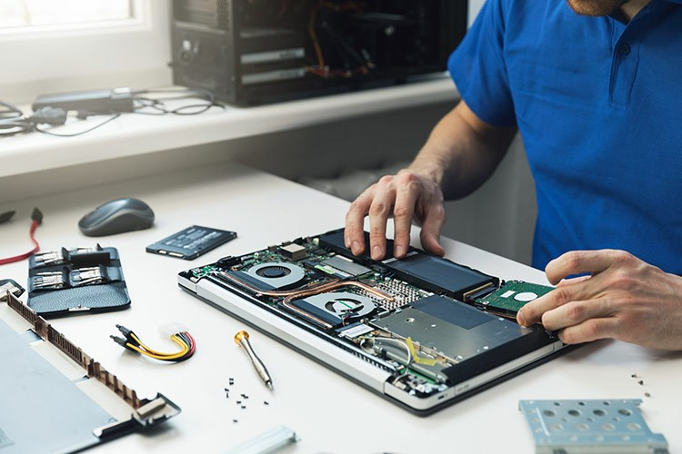

KW1C
gerund door ICT-studenten
 ICT-Loket
ICT-Loket
Bij het ICT-loket op de Noordkade in Veghel bent u van harte welkom voor gratis hulp bij computers, laptops, tablets, telefoons en printers. Loop gerust binnen of neem contact met ons op; wij helpen u graag verder.

Het ICT-loket op de Noordkade in Veghel wordt met enthousiasme gerund door ICT-studenten van het Koning Willem I College. Tijdens de coronaperiode ontstond dit initiatief, toen stageplekken beperkt beschikbaar waren.
Met de kennis en vaardigheden uit de ICT-opleidingen helpen wij zowel particulieren als bedrijven graag verder met uiteenlopende vragen en praktische problemen. Daarbij werken we samen met lokale bedrijven, zodat we u altijd zo goed mogelijk kunnen ondersteunen.
gerund door ICT-studenten
gevestigd in Veghel
hulp voor particulier en bedrijf
Heeft uw computer of laptop kuren? Wij kijken graag met u mee en helpen u rustig verder met storingen, instellingen en praktische vragen.
Meer informatieOok voor mobiele apparaten bent u bij ons van harte welkom. We denken met u mee bij problemen, uitleg en alledaagse gebruiksvragen.
Meer informatieWerkt uw printer of randapparatuur niet zoals het hoort? Samen zoeken we graag naar een duidelijke en passende oplossing.
Meer informatieIs er iets kapot? Wij onderzoeken het probleem zorgvuldig en geven u een eerlijk en helder advies over reparatie en vervolgstappen.
Meer informatieOp zoek naar een betaalbare en betrouwbare laptop? Wij helpen u graag bij het vinden van een refurbished model dat bij uw wensen past.
Meer informatieVan een kleine vraag tot praktische ondersteuning: wij nemen graag de tijd om particulieren en bedrijven vriendelijk en duidelijk verder te helpen.
Meer informatieOf het nu gaat om installatie, instellingen of het gebruik van uw apparaat: wij nemen graag de tijd om u stap voor stap verder te helpen.
Wij helpen u met het installeren of opnieuw instellen van Windows, zodat uw computer weer veilig en prettig werkt.
Ik wil hulpVan een nieuw e-mailadres tot een correcte instelling op uw apparaat: wij regelen het graag samen met u.
Ik wil hulpWij helpen u bij het installeren van handige apps op uw smartphone en zorgen dat alles goed ingesteld staat.
Ik wil hulpHeeft u een programma of app nodig? Wij installeren dit netjes en geven waar nodig een korte uitleg.
Ik wil hulpWij leggen instellingen rustig uit en helpen u bij het juist instellen van uw apparaten, helemaal op uw tempo.
Ik wil hulpWij schonen uw computer zorgvuldig op en maken, waar mogelijk gecertificeerd, weer extra ruimte vrij.
Ik wil hulpNaast ondersteuning kunt u bij ons ook terecht voor betrouwbare apparaten en accessoires voor dagelijks gebruik.
Een duurzame en betaalbare keuze voor wie op zoek is naar een betrouwbare laptop met een tweede leven.
Geschikte desktopoplossingen voor thuis, studie of werk, afgestemd op uw wensen.
Praktische beeldschermen voor een prettige en overzichtelijke werkplek.
Handig voor videobellen, online lessen of rustig werken met goed geluid.
Comfortabele toetsenborden die passen bij uw manier van werken en gebruiken.
Betrouwbare muizen voor dagelijks gebruik, eenvoudig en prettig in gebruik.
Wij nemen graag gebruikte laptops in als donatie. Hiermee kunnen wij andere klanten helpen en apparaten een waardevolle tweede kans geven.
Verlengde Noordkade 14
Veghel
U bent van harte welkom om langs te komen met uw ICT-vraag. Wij ontvangen u graag op onze locatie op de Noordkade.
| Periode | Dagen | Tijd |
|---|---|---|
| September t/m februari | maandag & dinsdag | 09:30 – 17:00 |
| Februari t/m mei | maandag, dinsdag, donderdag, vrijdag | 09:30 – 17:00 |
| Mei t/m juni | donderdag & vrijdag | 09:30 – 17:00 |
Wij werken bij voorkeur op afspraak.
Blijf op de hoogte van nieuws, updates en activiteiten van het ICT-loket.
Facebook: @IctloketnoordkadeHier beantwoorden we graag veelgestelde vragen over bezoek, ondersteuning en de mogelijkheden van het ICT-loket op de Noordkade.
Nee, u bent tijdens openingstijden van harte welkom om binnen te lopen. Wilt u zeker weten dat iemand direct tijd voor u heeft, dan kunt u vooraf contact met ons opnemen.
Onze ondersteuning is gratis en laagdrempelig. Alleen wanneer er sprake is van producten of onderdelen, informeren wij u vooraf duidelijk over eventuele kosten.
U vindt ons op de Noordkade in Veghel. Kom gerust binnen met uw vraag; de koffie staat voor u klaar.
U kunt bij ons terecht met vragen over computers, laptops, tablets, mobiele telefoons en printers. We luisteren naar uw situatie en zoeken samen naar een praktische oplossing.
Ja, zeker. Wij kijken graag mee wanneer een computer, laptop of tablet traag is of niet goed werkt en geven u helder advies over de beste vervolgstap.
Ja, ook voor printers en andere hardware kunt u bij ons terecht. We helpen bij storingen, aansluitproblemen en algemene vragen over het gebruik.
Wanneer een apparaat defect is, bekijken wij graag wat er aan de hand is. Indien mogelijk helpen we met een reparatie of adviseren we u over de meest passende oplossing.
Ja, wij adviseren u graag over een geschikte refurbished laptop. Zo helpen we u bij het vinden van een betrouwbare oplossing die past bij uw wensen en budget.
Zeker. Naast particulieren ondersteunen wij ook bedrijven met uiteenlopende ICT-vragen, praktische ondersteuning en passend advies.
Het ICT-loket wordt gerund door ICT-studenten van het Koning Willem I College. Zo combineren we praktijkervaring met toegankelijke en klantgerichte ondersteuning.
Ja, wij werken regelmatig samen met bedrijven in de regio. Daardoor kunnen we, wanneer dat nodig is, extra kennis en ondersteuning inzetten.
Wij bieden vriendelijke, duidelijke en professionele hulp op een laagdrempelige locatie op de Noordkade in Veghel. U bent altijd welkom om binnen te lopen met uw ICT-vraag.